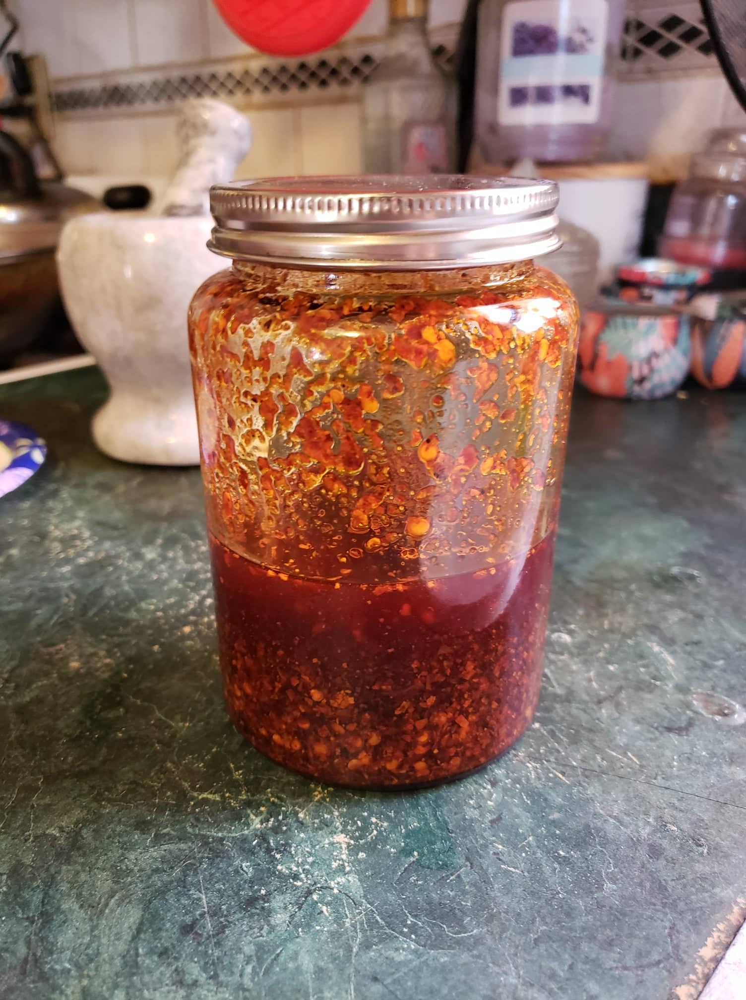

Toasted Chili Oil

Ingredients:
- 1 1/2 - 3 cups Vegetable oil
- 5 Star anise
- 1 Cinnamon Stick
- 2 Bay leaves
- 3 tbsp Whole sichuan peppercorns
- Optional: 2 Black cardamom pods
- Optional: 4 nuggets Dried sand ginger (about 1 tbsp)
- Optional: 2 tsp Whole cloves
- 3/4 - 1 1/4 cup Sichuan chili flakes
- 1 – 2 tsp salt
Instructions:
- Gather all the aromatics you plan to use. Place oil and selected aromatics into a pot with at least two inches of clearance between the oil and the rim of the pot. If using minimum aromatics, use closer to 1 1/2 cups of oil. If using all the optional aromatics, use closer to 3 cups of oil.
- Set it over medium heat to start, then progressively lower it to medium low or low heat as the oil comes to temperature. The oil should be at about 225-250° F and causing small bubbles to slowly rise from the aromatics. If you notice the spices sizzling more vigorously than that or turning dark too quickly, reduce the heat to cool it down. If you are not achieving small bubbles, slowly increase the heat. Hovering around 200-225° F is the safest way to prevent burning.
- While the oil is infusing, prepare your Sichuan chili flakes by placing them in a heatproof bowl. If you used 1½ cups of oil, ¾ cup of chili flakes is best. For 3 cups of oil, use 1¼ cups of chili flakes.
- Slowly pour the hot oil through a strainer onto the chili flakes. Generally, the oil should be between 225-250° F when pouring over the chili flakes. The preferred temperature likely depends on the brand of chili flakes. You can test the oil on a small bowl of chili flakes before you do the rest. Stir to evenly distribute the heat of the oil.
- Stir in the salt, and allow the chili oil to cool.